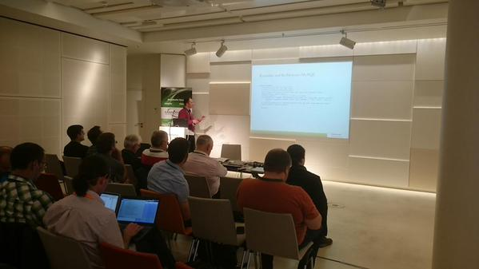
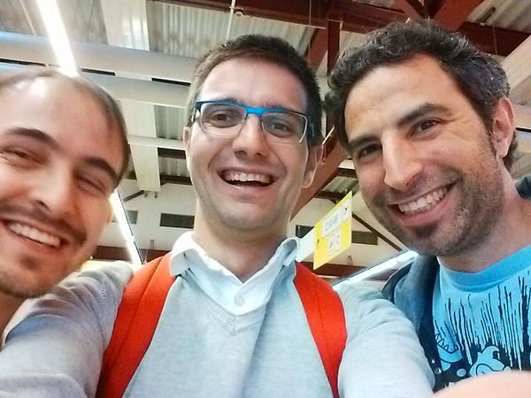

Last week of May I had the luck to attend Kamailio World Conference. It was my third time and as usually I learnt a lot. Kamailio was born fourteen years ago, so a lot of people had a lot of things to show.
This year the conference was focused in the following topics:
WebRTC
WebRTC is the highway to the future. HTML5 is a reality in web world nowadays. WebRTC is supported in some browsers and only need a push from Apple and Microsoft to reach all possible customers. Meanwhile companies like Tuenti are using WebRTC in their apps and they provide some valuable feedback to the community.
Tim Panton explained how to make WebRTC interact with some other HTML features. I loved the concept and I think that WebRTC doesn't need to be another phone in the web. Innovation and integration with the web will be the key to the success.
Jssip was explained by José Luis Millán. I use to work with this library, so for me was not as interested as it could be. But if you want to add some SIP-over-websocket library you should definitely take a look to this talk.
Mobile Operators- IMS
I'm not an expert in IMS or mobile operators, but some of the talks gave us some insights about the IMS world. As every year I learnt a lot about IMS. This time 3GPP-SMS-V2 kamailio module was presented by Carsten Bock, and he introduced us in the SMS solutions using Kamailio.
About mobile operators Dragos Vingarzan shows to us all the possible solutions about open mobile networks. He explained about how to build distributed mobile network and dived us into OpenEPC project. In case of natural disasters this project is a fast solution for rescue teams. Well done!
Every year FhG Fokus Institute exposes all the new stuff related with mobile network. This year Thomas Magedanz explained all the work that they are doing in 5G technology.
Pure Voip Applications
The reason why I always go to KWorld is for Voice Apps and to learn about third party applications that integrates with Kamailio. Last year I had seen Cgrates and few months later I started to use it.
This year Dan presented Cgrates LCR, this technology is pretty interesting for wholesale providers. In the other hand Matt Jordan provided us some insights about how to build voice apps with the new version of Asterisk. I really love the new ARI interface and it's matches perfectly with my idea of immutable servers.
On the other hand, Federico Cabiddu talked about the TSILO module, it's gorgeous. I think that TSILO module is too useful when your business logic is not into your kamailio config file. I'm looking forward to use TSILO with Evapi module and it'll help me a lot.
Another hot topic was application monitoring. Alexandr Dubovikov presented the new version of SIPcapture. Now you don't have any reason to don't start using it. On the other hand, Tudor Golubenco presented PacketBeat a software to monitor the performance of your application.
Sipgate always shows amazing use cases, last year they spoke about their infrastructure. This year Sebastian Damm gave a amazing talk about how they are providing services over IPv6. Hands-on with lunch.sipgate.de too, really nice initiative.
Kazoo is the innovation player in Kamailio. Glad to have them onboard. They have all the config files in Github and you can learn a lot from them, it's a great example! This year Luis Azedo was speaking about kazoo module that is a message queue for Kamailio. Kazoo + TSILO + EVAPI can provide a new way to make things in Kamailio and I'm looking forward to use/write about it.
Another talk was given by Simon Tennant about protocols and why some protocols were not successful. Simon is the CEO at Buddycloud. I met BuddyCloud early 2012 in Fosdem conference. Buddycloud is a chat/twitter service based on XMPP and open standards. You should keep an eye on this project.
Security
As often, Olle E. Johansson gave one of the keynotes. He explained all the problems related with old technology and provide advices to be more secure, revolutionary and keep the open standards, you know #morecrypto
Bluebox-ng was presented by my friend Sergio one of the core developers. He explained all the possible attacks in SIP and he provided some examples + tricks about how Bluebox can help you to keep your platform secure. He spoke about custom scripts in Bluebox so I'll check to integrate this in our Jenkis workflow.
The last talk was given by Daniel. He spoke about some security tips in our kamailio config files. I need to say that I don't agree 100 percent with his point of view. I think that redis is more effective than any sql in memory database as backend, but same approach can be used with redis in this case.
The last talk was given by Daniel. He spoke about some security tips in our kamailio config files.Finally I missed a lot of people: Carlos Ruiz from TokyApp, Torrey from Voxbone, Anton from Quobis... active members that I always learn a lot from them. In the other hand big thanks to all the people that were involved in this conference. It was a blast!
Huge thanks from the people to Quobis (Sergio and Santi). I spent my trip with them and it was a pleasure, thanks guys.
Commentarios: